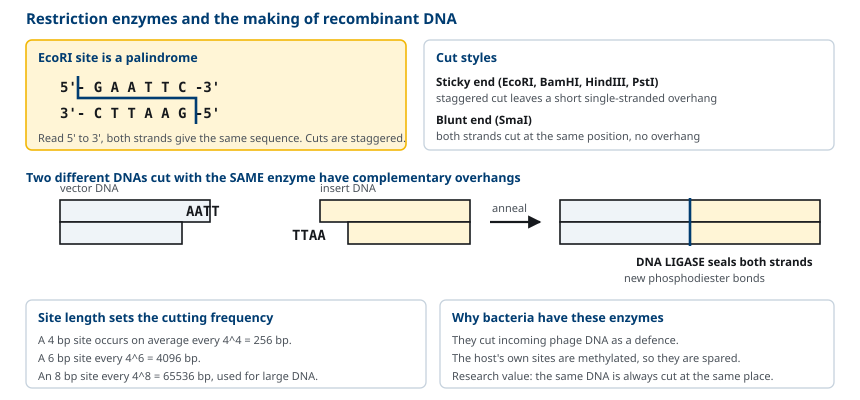
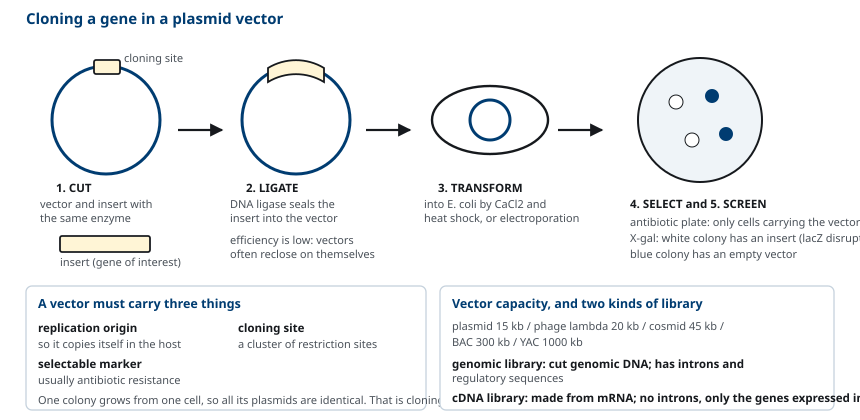
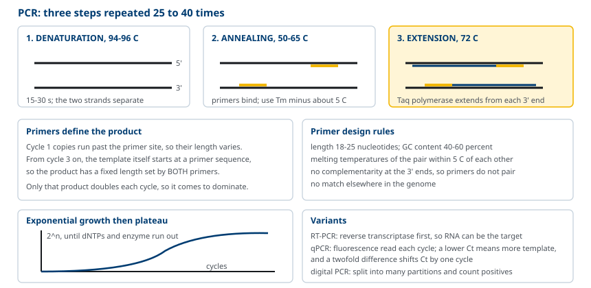
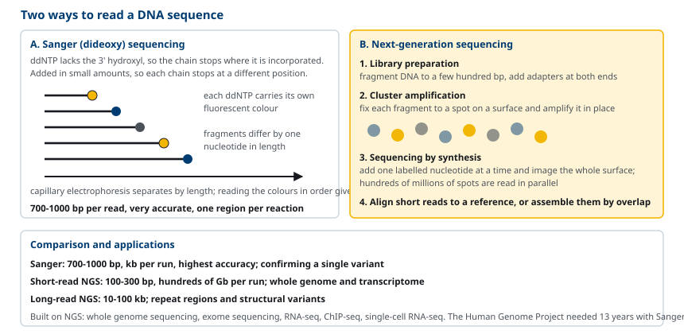
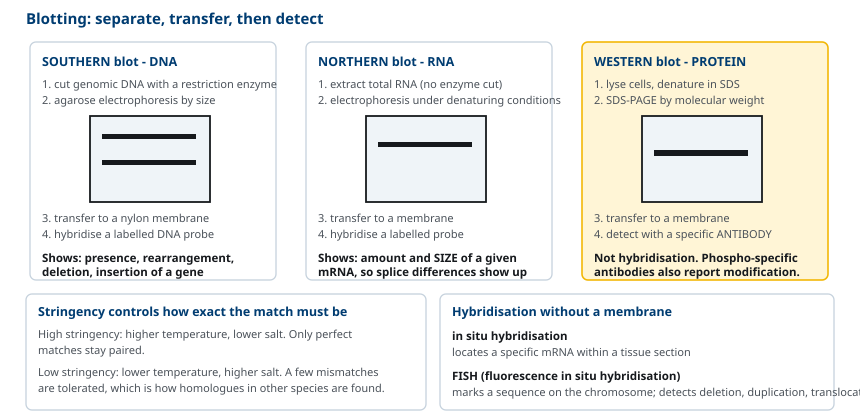
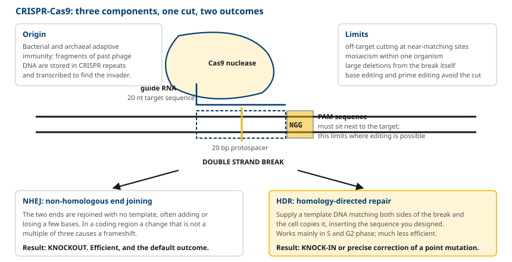

M01-W06-L01 · 인체일반생물학과 기초세포생물학
재조합 DNA와 분자생물학 실험 기법
Recombinant DNA and Techniques of Molecular Biology
학습목표
- 제한효소의 인식 서열과 절단 양식을 설명하고 재조합 DNA가 만들어지는 과정을 쓴다.
- 벡터의 필수 요소를 들고 plasmid cloning의 전 과정을 순서대로 설명한다.
- PCR의 세 단계와 온도 조건을 설명하고 primer 설계의 원칙을 적용한다.
- Sanger 염기서열 분석과 차세대 염기서열 분석의 원리와 처리량 차이를 비교한다.
- Southern, Northern, Western blot의 표적과 절차를 구분하고 결과를 해석한다.
- RT-qPCR, RNA-seq, microarray로 유전자 발현을 측정하는 원리를 설명한다.
- 유전자 도입 방법을 선택 기준과 함께 설명하고 transgenic과 knockout 생물의 차이를 구분한다.
- CRISPR-Cas9의 작동 원리를 세 요소로 설명하고 knockout과 knock-in의 차이를 밝힌다.
선수지식
- M01-W05-L03 유전정보의 흐름: 복제·전사·번역 — DNA 복제, 전사, 번역, 염기쌍 상보성, reverse transcriptase
- M01-W05-L01 세포의 기원·진화와 세포 연구 방법 — 세포배양, 모델 생물, 원심분리
- M01-W05-L02 생체분자와 막의 구조 — nucleic acid와 단백질의 구조
1. 들어가며: 보이지 않는 분자를 다루는 문제
이 수업은 기법을 다룬다. 그런데 기법을 외우는 수업이 아니다. 분자생물학의 거의 모든 기법이 몇 가지 성질에서 나왔다는 것을 보는 수업이다. 그 성질을 알면 기법의 세부를 외우지 않아도 왜 그런 순서로 하는지, 결과가 이상할 때 무엇을 의심할지 판단할 수 있다.
먼저 다루는 대상의 규모를 숫자로 잡아 두자. 사람 세포 하나에 든 DNA는 약 30억 염기쌍이고, 분석하려는 유전자 하나는 보통 수천 염기쌍이다. 전체의 백만분의 일 수준이다. 게다가 그 유전자는 세포당 두 벌뿐이다. 이런 것을 눈으로 볼 수도, 손으로 집을 수도 없다. 그래서 분자생물학의 첫 과제는 언제나 둘이다. 그 하나를 수없이 많게 만드는 것(증폭), 그리고 섞인 것들 가운데서 그것만 골라내는 것(선택)이다.
이 두 과제를 푸는 성질이 네 가지다. 본문 전체가 이 네 가지의 조합이다.
- 상보성: A는 T와, G는 C와만 짝을 이룬다. 그래서 찾고 싶은 서열의 상보 사슬을 만들어 넣으면 그 서열에만 붙는다. 탐침, 프라이머, 그리고 CRISPR의 안내 RNA가 모두 이 성질을 쓴다.
- 서열을 알아보는 단백질: 세포에는 특정 서열을 알아보고 끊거나 붙이는 효소가 있다. 제한효소와 ligase가 그 예이며, 이것이 DNA를 원하는 조각으로 나누고 다시 이어 붙이는 가위와 풀이 된다.
- 크기와 전하로 나누는 분리: DNA와 단백질은 전기장에서 움직이고, 그 속도가 크기에 따라 다르다. 그래서 섞인 것을 띠로 나누어 볼 수 있다.
- 증폭: 복제 효소를 시험관에서 반복해 돌리면 한 분자가 수십억 개가 된다. 이것이 PCR이다.
기법을 묶는 순서도 미리 밝힌다. 2·3절은 세포를 이용해 DNA를 늘리는 고전적 방법(제한효소와 벡터)을, 4절은 세포 없이 늘리는 방법(PCR)을 다룬다. 5절은 서열을 읽는 방법, 6·7절은 특정 분자가 있는지 양이 얼마인지 재는 방법이다. 8·9절은 세포나 생물에 유전자를 넣어 기능을 보는 방법이고, 마지막 10절에서 결과를 해석할 때의 원칙을 정리한다.
실험 기법을 배우는 이유도 분명히 해 두자. 임상에서 쓰는 유전 검사, 종양의 분자 진단, 감염병의 병원체 검출이 모두 이 기법들의 응용이다. 검사 결과지에 적힌 "검출됨", "음성", "변이 발견"이 어떤 반응의 결과인지를 알면 그 결과의 한계도 함께 읽을 수 있다.
2. 재조합 DNA 기술의 기본 개념과 제한효소
세포 안에는 특정 유전자 한 copy가 수만 개의 다른 유전자에 섞여 있다. 그 하나를 분리해 분석하려면 증폭과 선택적 조작이 필요하다. 1970년대에 두 가지 도구가 갖추어지면서 이것이 가능해졌다. 제한효소와 벡터다.
제한효소(restriction enzyme, restriction endonuclease)는 세균이 외부에서 들어온 파지 DNA를 끊어 방어하기 위해 갖는 효소다. 세균 자신의 DNA는 같은 서열이 methylation되어 있어 끊기지 않는다. 연구 도구로서의 가치는 인식 서열이 정해져 있어 같은 DNA를 언제나 같은 자리에서 끊는다는 점에 있다.
인식 서열은 대개 4~8 염기쌍이고 palindrome, 즉 두 사슬을 5′→3′로 읽으면 같은 서열이다.
| 효소 | 출처 | 인식 서열 | 절단 양식 |
|---|---|---|---|
| *Eco*RI | E. coli | G↓AATTC | 5′ 돌출(sticky end) |
| *Bam*HI | Bacillus amyloliquefaciens | G↓GATCC | 5′ 돌출 |
| *Hin*dIII | Haemophilus influenzae | A↓AGCTT | 5′ 돌출 |
| *Pst*I | Providencia stuartii | CTGCA↓G | 3′ 돌출 |
| *Sma*I | Serratia marcescens | CCC↓GGG | 돌출 없음(blunt end) |
절단 양식이 재조합의 열쇠다. 두 사슬을 어긋나게 끊으면 짧은 단일사슬 말단이 남는데, 이것을 sticky end라 한다. 같은 효소로 자른 서로 다른 두 DNA는 서로 상보적인 sticky end를 가지므로 염기쌍을 이루어 붙을 수 있다. 붙은 자리를 DNA ligase가 phosphodiester 결합으로 봉하면 원래 자연에 없던 재조합 DNA가 완성된다.
인식 서열의 길이가 절단 빈도를 정한다. 6 염기쌍 서열은 무작위 DNA에서 평균 4⁶ = 4,096 염기쌍마다 한 번 나타나고, 8 염기쌍 서열은 65,536 염기쌍마다 한 번 나타난다. 그래서 큰 DNA를 다룰 때는 인식 서열이 긴 효소를 쓴다. 반대로 4 염기쌍 서열을 인식하는 효소는 평균 256 염기쌍마다 끊으므로 작은 조각을 많이 만들고, 유전자 하나를 통째로 꺼내려는 목적에는 맞지 않는다.
효소의 이름은 출처 생물의 이름에서 온다. 속명의 첫 글자와 종명의 두 글자를 이어 이탤릭으로 쓰고(Eco, Bam, Hin), 균주 표시를 붙이고, 그 생물에서 발견된 순서를 로마 숫자로 적는다. *Eco*RI은 Escherichia coli RY13 균주에서 첫 번째로 발견된 효소라는 뜻이다. 서로 다른 생물에서 같은 서열을 인식하는 효소가 따로 발견되는 일이 흔한데, 이런 관계를 isoschizomer라 한다. *Sma*I과 *Xma*I은 같은 CCCGGG를 인식하지만 끊는 자리가 달라 *Sma*I은 blunt end를, *Xma*I은 5′ 돌출을 남긴다. 같은 서열이라도 어디를 끊는지가 다르면 이후의 연결 전략이 달라진다는 뜻이다.
연구 도구로 쓰이는 효소는 거의 모두 type II다. Type II 효소는 인식 서열 안이나 바로 옆을 끊고 보조인자로 Mg²⁺만 요구하므로 결과를 예측할 수 있다. 반면 type I 효소는 인식 서열에서 멀리 떨어진 불규칙한 자리를 끊고, type III는 인식 서열 바깥을 일정 거리에서 끊으며, 둘 다 ATP를 쓰고 methylase 활성을 함께 가진다. 절단 위치가 정해지지 않으면 재조합의 설계가 불가능하므로, 실험실 목록에 오르는 효소가 type II로 좁혀진 것은 우연이 아니다.
절단이 실패하는 원인도 서열 바깥에 있을 수 있다. 세균에서 꺼낸 plasmid는 숙주의 Dam methylase(GATC의 adenine을 methylation)와 Dcm methylase(CCWGG의 cytosine)에 의해 이미 methylation되어 있고, 이 변형에 민감한 효소는 그 자리를 끊지 못한다. 반대로 PCR로 만든 DNA는 methylation이 전혀 없으므로 methylation을 요구하는 효소로는 끊리지 않는다. 또 효소 농도가 지나치게 높거나 완충액 조건이 벗어나면 인식 서열과 한 염기 다른 자리까지 끊는 star activity가 나타난다. 그래서 효소마다 정해진 완충액과 온도, 반응 시간이 제품 설명서에 지정되어 있고, 이를 벗어난 반응은 해석할 수 없는 조각 양상을 만든다.
끊은 결과를 보는 수단은 agarose 겔 전기영동이다. DNA는 인산기 때문에 pH 중성에서 균일하게 음전하를 띠므로 전기장에서 양극으로 이동하고, 이동 거리는 겔의 그물을 통과하는 난이도에 따라 정해져 분자량의 log에 대략 반비례한다. 즉 작은 조각이 멀리 간다. 크기를 아는 조각들을 함께 흘리는 size marker(ladder)와 비교해 각 띠의 크기를 읽는다. 겔의 agarose 농도가 분리 범위를 정하는데, 0.7% 겔은 수 kb에서 수십 kb를 잘 나누고 2% 겔은 100~1,000 염기쌍대를 잘 나눈다. 짧은 조각이나 한 염기 차이를 보려면 polyacrylamide 겔을 쓴다.
절단 양상 자체가 정보가 되는 경우도 있다. 어떤 DNA를 여러 효소로 따로 끊어 조각 크기를 모아 보면 각 인식 서열의 상대적 위치를 추정할 수 있고, 이것이 restriction map이다. 염기서열 분석이 비싸던 시절에는 이 지도가 유전자 구조를 다루는 유일한 좌표였다. 또 변이가 제한효소 인식 서열을 만들거나 없애면 조각 크기가 달라지는데, 이를 이용한 진단법이 restriction fragment length polymorphism(RFLP) 분석이다. 지금은 염기서열 분석으로 대체되었지만, 왜 그 변이가 특정 조각 크기로 보이는지를 묻는 문제는 여전히 출제된다.

3. 벡터와 cloning
끊어 붙인 DNA를 증폭하려면 숙주 세포 안에서 복제될 수 있어야 한다. 그 운반체가 벡터(vector)다. 벡터에는 세 가지가 반드시 있어야 한다.
- Replication origin: 숙주 안에서 스스로 복제된다.
- Selectable marker: 벡터가 들어간 세포만 골라낼 수 있게 한다. 보통 항생제 저항성 유전자다.
- Cloning site: 제한효소 인식 서열이 모여 있는 구간(multiple cloning site)으로, 여기에 외래 DNA를 끼워 넣는다.
벡터의 종류는 담을 수 있는 DNA 크기로 나뉜다.
| 벡터 | 수용 크기 | 숙주 | 주된 용도 |
|---|---|---|---|
| Plasmid | ~15 kb | E. coli | 유전자 하나의 cloning, 발현 |
| Bacteriophage λ | ~20 kb | E. coli | 유전체 library |
| Cosmid | ~45 kb | E. coli | 큰 조각 library |
| Bacterial artificial chromosome(BAC) | ~300 kb | E. coli | 유전체 지도, 서열 분석 |
| Yeast artificial chromosome(YAC) | ~1,000 kb | 효모 | 매우 큰 영역 |
Plasmid cloning의 전 과정은 다섯 단계다.
- 절단: 벡터와 삽입할 DNA를 같은 제한효소로 자른다.
- 연결(ligation): 두 조각을 섞고 DNA ligase를 넣어 봉합한다. 벡터가 자기끼리 다시 붙는 경우가 많아 효율은 낮다.
- 형질전환(transformation): 연결 산물을 *E. coli*에 넣는다. CaCl₂ 처리와 열충격, 또는 전기천공(electroporation)을 쓴다.
- 선택(selection): 항생제가 든 배지에 깔아 벡터가 들어간 세포만 자라게 한다.
- 확인(screening): 벡터는 들어갔지만 삽입물이 없는 것을 걸러낸다. 삽입 지점이 lacZ 유전자 안에 있으면 삽입물이 들어간 colony는 X-gal 배지에서 흰색으로, 없는 것은 파란색으로 나타난다.
한 colony는 하나의 세포에서 자란 집단이므로 그 안의 plasmid는 모두 같다. 이렇게 단일 분자에서 유래한 동일한 집단을 얻는 것이 cloning이고, 이것이 분자생물학의 출발점이 되었다.
유전체 library와 cDNA library를 구별해야 한다. 유전체 DNA를 잘라 벡터에 넣으면 genomic library이고 intron과 조절 서열을 포함한다. mRNA를 reverse transcriptase로 DNA로 바꾸어 넣으면 cDNA library이고 intron이 없으며 그 조직에서 발현되는 유전자만 들어 있다. 사람 단백질을 세균에서 발현시킬 때는 세균에 splicing 기구가 없으므로 반드시 cDNA를 써야 한다.
연결 단계의 효율을 올리는 장치들이 따로 있다. 벡터를 한 가지 효소로만 자르면 양쪽 끝이 서로 상보적이어서 삽입물 없이 자기끼리 다시 붙는 self-ligation이 가장 흔한 산물이 된다. 이를 줄이려면 벡터 끝의 5′ 인산기를 alkaline phosphatase로 떼어 낸다. 인산기가 없으면 ligase가 phosphodiester 결합을 만들 수 없으므로 벡터끼리는 붙지 못하고, 인산기를 가진 삽입물이 끼어들어야만 한쪽씩 봉합된다. 또 벡터의 양쪽 끝을 호환되지 않는 두 효소로 자르면 삽입물이 한 방향으로만 들어가는 directional cloning이 되어, 방향을 확인하는 수고가 없어진다.
제한효소를 쓰지 않는 연결 방법이 지금은 더 널리 쓰인다. TA cloning은 Taq polymerase가 산물의 3′ 말단에 adenine 하나를 덧붙이는 성질을 이용해, 3′ 말단에 thymine이 돌출된 벡터와 PCR 산물을 바로 붙인다. Gibson assembly는 이어 붙일 조각들의 끝에 15~40 염기쌍의 중복 서열을 PCR로 미리 넣어 두고, exonuclease로 한쪽 사슬을 깎아 단일사슬을 드러내고, 서로 짝지은 뒤 polymerase와 ligase로 메운다. 인식 서열의 제약을 받지 않고 여러 조각을 한 번에, 흔적 없이(seamless) 이어 붙일 수 있어 합성생물학의 기본 수단이 되었다. Gateway cloning은 파지 λ의 부위 특이 재조합을 이용해 같은 삽입물을 여러 벡터로 옮긴다.
벡터를 cloning vector와 expression vector로 나누는 것도 중요하다. Cloning vector는 DNA를 보관하고 증폭하는 것이 목적이므로 origin, marker, cloning site만 있으면 된다. Expression vector는 그 DNA에서 실제로 단백질이 만들어지게 하는 것이 목적이므로 다음이 더 필요하다.
- Promoter: 숙주가 인식하는 것이어야 한다. 세균에서는 유도 가능한 lac, T7 promoter를 쓰고, 포유류 세포에서는 CMV, EF1α promoter를 쓴다.
- 번역 개시 신호: 세균에서는 ribosome 결합 서열(Shine–Dalgarno), 진핵에서는 Kozak 서열.
- 종결 신호: 세균의 transcription terminator, 진핵의 polyadenylation 신호.
- 정제용 tag: His₆(금속 친화 수지), GST, FLAG, HA 등. 정제와 검출을 쉽게 하지만 단백질의 기능을 바꿀 수 있으므로 protease 인식 서열을 넣어 떼어낼 수 있게 설계한다.
세균에서 사람 단백질을 만들 때 생기는 문제는 intron만이 아니다. Codon 사용 빈도가 달라 희귀 codon이 많으면 번역이 멈추므로 서열을 숙주에 맞게 바꾸는 codon optimization을 한다. 과발현된 단백질이 접히지 못해 inclusion body로 뭉치면 발현 온도를 낮추거나 chaperone을 함께 발현시킨다. 결정적으로 세균은 당 사슬을 붙이지 못하고 disulfide 결합의 형성도 제한적이므로, glycoprotein이나 복잡한 disulfide 구조를 가진 치료용 단백질은 효모, 곤충세포, 또는 CHO 같은 포유류 세포에서 생산한다. Erythropoietin이나 단클론항체가 세균이 아니라 CHO 세포에서 만들어지는 이유가 이것이다.
두 숙주에서 모두 복제되도록 두 개의 origin을 가진 벡터를 shuttle vector라 한다. 설계와 증폭은 다루기 쉬운 *E. coli*에서 하고, 완성된 construct를 효모나 포유류 세포로 옮겨 기능을 보는 방식이 표준 작업 흐름이 되었다.

4. PCR: 시험관 안의 DNA 증폭
Cloning은 살아 있는 세포를 거치므로 며칠이 걸린다. 1983년 Kary Mullis가 고안한 PCR(polymerase chain reaction)은 세포 없이 몇 시간 안에 특정 구간만 증폭한다.
필요한 것은 다섯 가지다. 주형 DNA, 양쪽 끝을 지정하는 primer 두 개, dNTP 네 종, 열에 안정한 DNA polymerase(*Thermus aquaticus*의 Taq polymerase), 그리고 Mg²⁺이 든 완충액이다. 한 주기는 세 단계로 이루어진다.
- 변성(denaturation), 94~96°C, 15~30초. 두 사슬이 분리된다.
- 결합(annealing), 50~65°C, 15~60초. primer가 주형의 상보적 부위에 결합한다. 온도는 primer의 melting temperature에서 약 5°C 낮게 잡는다.
- 신장(extension), 72°C, 30초~1분. Taq polymerase가 primer의 3′ 말단부터 사슬을 늘린다.
주기마다 DNA 양이 두 배가 되므로 n 주기 뒤에는 2ⁿ배가 된다. 30 주기면 약 10억 배다. 실제로는 후반에 기질과 효소가 고갈되어 증폭이 포화 곡선을 그린다.
증폭되는 것은 두 primer 사이의 구간뿐이라는 점이 중요하다. 첫 두 주기에서는 primer 바깥쪽까지 합성되지만, 세 번째 주기부터 양쪽 primer로 경계가 정해진 산물이 기하급수적으로 늘어 전체를 지배한다.
Primer 설계의 원칙은 다음과 같다. 길이 18~25 nucleotide, GC 함량 40~60%, 두 primer의 melting temperature 차이 5°C 이내, 3′ 말단에 상보적인 서열이 없어 primer끼리 붙지 않게 하고, 표적 외 서열과 일치하지 않게 한다.
PCR의 변형이 용도를 넓힌다.
- RT-PCR: reverse transcriptase로 RNA를 cDNA로 바꾼 뒤 증폭한다. RNA를 표적으로 할 수 있다.
- Real-time PCR(qPCR): 주기마다 형광을 측정해 초기 주형 양을 정량한다. 형광이 역치를 넘는 주기 수(C_t)가 작을수록 주형이 많다. 주형 양이 두 배 차이 나면 C_t가 1 주기 차이 난다.
- Digital PCR: 반응을 수만 개의 미세 구획으로 나누어 양성 구획 수를 세어 절대 정량한다.
- Nested PCR: 1차 산물을 주형으로 그 안쪽의 primer로 다시 증폭해 특이도를 올린다. 표적이 극히 적을 때 쓴다.
- Multiplex PCR: 여러 쌍의 primer를 한 반응에 넣어 여러 구간을 동시에 증폭한다. 호흡기 바이러스 동시 검사, DMD 유전자의 exon 결실 확인에 쓴다.
- Allele-specific PCR(ARMS): primer의 3′ 말단을 변이 염기에 맞추어, 변이가 있을 때만 신장이 일어나게 한다. Polymerase가 3′ 말단의 불일치를 용납하지 않는 성질을 그대로 쓴 설계다.
어떤 polymerase를 쓰는가가 결과의 성질을 바꾼다. Taq polymerase는 3′→5′ exonuclease(proofreading) 활성이 없어 오류율이 약 10⁻⁵/염기에 머물고, 1 kb를 30주기 증폭하면 산물 집단 안에 변이가 섞인다. 산물을 벡터에 넣어 단백질을 발현시키려면 이 오류가 치명적이므로, proofreading 활성을 가진 *Pyrococcus furiosus*의 Pfu나 그 개량 효소를 쓴다. 다만 proofreading 효소는 3′ 말단에 adenine을 덧붙이지 않아 TA cloning에 쓸 수 없고, blunt end 산물을 만든다. 반대로 진단에서 산물의 유무만 보는 경우에는 속도와 가격이 좋은 Taq로 충분하다.
반응을 실패하게 만드는 요인도 정해져 있다. Primer끼리 3′ 말단이 상보적이면 서로를 주형으로 증폭하는 primer dimer가 생겨 짧은 띠로 나타나고, 표적과 부분적으로 일치하는 다른 부위가 증폭되면 예상 밖 크기의 띠가 나온다. 결합 온도를 올리면 특이도가 올라가고 내리면 수율이 올라가므로, 실패한 PCR의 첫 번째 조정 변수는 결합 온도다. 상온에서 일어나는 비특이 결합을 막기 위해 효소를 항체나 열에 녹는 물질로 막아 두었다가 첫 변성 단계에서 풀리게 하는 hot-start 효소를 쓴다. 임상 시료에서는 heparin, hemoglobin, 담즙산, EDTA가 polymerase를 억제하므로 핵산을 정제하고 내부 대조군(internal control)을 함께 증폭해 억제 여부를 확인한다.
정량의 원리를 수식으로 정리해 두면 해석이 쉬워진다. qPCR에서 형광이 역치를 넘는 주기 수 C_t는 초기 주형 농도의 log에 반비례한다. 효율이 완전한 반응(한 주기에 정확히 2배)에서는 주형이 10배 차이 나면 C_t가 log₂10 ≈ 3.3 주기 차이 난다. 희석 계열로 표준 곡선을 그려 기울기에서 효율을 계산하고, 효율이 90~110%를 벗어나면 그 primer 쌍으로는 정량하지 않는다. 산물이 하나인지는 반응 후 온도를 서서히 올리며 형광 감소를 보는 melting curve 분석으로 확인한다. 봉우리가 둘이면 primer dimer나 비특이 산물이 섞여 있다는 뜻이고, 그 반응의 C_t 값은 믿을 수 없다.
열 순환기가 필요 없는 등온 증폭도 현장 진단에서 자리를 잡았다. LAMP는 고리 구조를 만드는 네 종 이상의 primer와 가닥 치환 활성을 가진 polymerase를 써서 한 온도(약 65°C)에서 증폭하며, 산물이 많아지면 탁해지거나 pH가 변해 색으로 판독된다. 장비 없이 쓸 수 있는 대신 primer 설계가 까다롭고 정량이 어렵다.

5. 염기서열 분석: Sanger와 차세대
Sanger sequencing(dideoxy 법)은 사슬 신장을 특정 염기에서 멈추게 해 서열을 읽는다. 원리는 다음과 같다.
반응에 보통의 dNTP와 함께 소량의 dideoxyNTP(ddNTP)를 넣는다. ddNTP는 3′ hydroxyl기가 없어 다음 nucleotide가 붙을 수 없으므로, 일단 끼어들면 그 자리에서 사슬이 끝난다. ddNTP가 소량이므로 각 사슬은 서로 다른 위치에서 무작위로 끝나고, 결과적으로 길이가 1 nucleotide씩 다른 조각 집단이 생긴다. 네 종의 ddNTP에 서로 다른 형광을 붙여 두면, 모세관 전기영동으로 길이순으로 흘려보내며 형광을 읽어 서열을 그대로 얻는다.
한 번에 읽는 길이는 700~1,000 염기쌍이고 정확도가 높아 지금도 변이 확인의 표준으로 쓰인다. 그러나 반응 하나에 한 구간만 읽으므로 처리량이 낮다. 사람 유전체 초안 작성(Human Genome Project, 1990~2003)에 13년과 약 27억 달러가 든 이유가 여기에 있다.
차세대 염기서열 분석(next-generation sequencing, NGS)은 수억 개의 반응을 동시에 진행해 처리량을 올렸다. 가장 널리 쓰이는 방식의 흐름은 다음과 같다.
- Library 제작: DNA를 수백 염기쌍으로 조각내고 양쪽에 adapter를 붙인다.
- 집락 증폭: 각 조각을 고체 표면의 한 지점에 고정하고 그 자리에서 PCR로 증폭해 같은 서열의 집락을 만든다.
- 합성에 의한 서열 결정(sequencing by synthesis): 형광을 붙인 nucleotide를 한 번에 한 개씩 붙이고 영상을 찍어 어느 염기가 들어갔는지 읽는다. 수억 개 지점을 한 장의 영상으로 동시에 읽는다.
- 정렬과 조립: 짧은 read를 참조 유전체에 정렬하거나 서로 겹치는 부분으로 이어 붙인다.
| 항목 | Sanger | 단일 read 짧은 NGS | 장-read NGS |
|---|---|---|---|
| Read 길이 | 700~1,000 bp | 100~300 bp | 10~100 kb |
| 한 번의 산출량 | ~kb | 수백 Gb~Tb | 수십 Gb |
| 정확도 | 매우 높다 | 높다 | 중간, 반복 측정으로 보완 |
| 강점 | 단일 구간 확인 | 유전체·전사체 전체 | 반복 서열, 구조 변이 |
NGS가 열어 준 응용은 넓다. 전장유전체 분석(whole genome sequencing), 단백질 암호화 부위만 읽는 exome sequencing, 전사체를 읽는 RNA-seq, DNA-단백질 결합 부위를 찾는 ChIP-seq, 세포 하나씩 읽는 single-cell RNA-seq가 모두 같은 기반 기술 위에 있다.
Coverage(depth)가 NGS 결과의 신뢰도를 정하는 핵심 수치다. 한 염기가 평균 몇 개의 read에 포함되었는지를 뜻하며, 전장유전체는 보통 30×, exome은 100×, 종양의 체세포 변이 탐색은 500× 이상으로 읽는다. 깊이가 필요한 이유는 두 가지다. 첫째, 각 read에 오류가 섞이므로 같은 자리를 여러 번 읽어야 진짜 변이와 읽기 오류를 구별할 수 있다. 둘째, 변이가 세포의 일부에만 있을 때 그 비율을 측정해야 한다. 변이를 가진 read의 비율을 variant allele frequency(VAF)라 하는데, 이형접합 생식계열 변이는 약 0.5, 동형접합은 약 1.0으로 나오고, 종양의 subclone 변이는 0.05처럼 낮은 값을 가진다. VAF가 0.03인 변이를 자신 있게 부르려면 그 자리를 수백 번 읽어야 한다.
짧은 read의 한계는 정렬의 모호함에서 온다. 사람 유전체의 절반 가까이가 반복 서열이므로, 150 염기쌍 read가 유전체의 어느 copy에서 왔는지 정할 수 없는 구간이 생긴다. 그래서 큰 결실·중복·역위·전좌 같은 구조 변이와 반복 구간의 확장은 짧은 read로 놓치기 쉽다. 수십 kb를 한 번에 읽는 장-read 기술이 이 빈틈을 메운다. Nanopore 방식은 단일사슬 DNA가 막의 구멍을 통과할 때 생기는 이온 전류의 변화를 읽고, SMRT 방식은 고정된 polymerase가 염기를 붙일 때마다 나오는 형광을 실시간으로 읽는다. 둘 다 염기 하나하나의 정확도는 낮지만 같은 분자를 반복 측정하거나 깊이를 올려 보완하며, 반복 서열, haplotype 결정, 그리고 DNA의 methylation을 서열과 함께 읽는 데 강하다.
| 적용 | 읽는 범위 | 전형적 깊이 | 주된 용도 |
|---|---|---|---|
| Targeted panel | 수십~수백 유전자 | 500~2,000× | 종양 변이 검사, 유전성 질환 패널 |
| Exome(WES) | coding 약 1~2% | 100× | 원인 미상 유전질환 진단 |
| Whole genome(WGS) | 전체 | 30× | 구조 변이, 비coding 변이 |
| RNA-seq | 전사체 | 2,000만~5,000만 read | 발현량, splice variant, 융합 |

6. Hybridization: Southern, Northern, Western blot
Hybridization은 단일사슬 핵산이 상보적인 서열과 염기쌍을 이루는 성질을 이용해 특정 서열을 찾아내는 방법이다. 표지한 짧은 핵산(probe)을 섞어 결합 여부를 본다.
결합의 엄격함은 온도와 염 농도로 조절한다. 온도를 높이고 염 농도를 낮추면(high stringency) 완전히 일치하는 서열만 결합이 유지되고, 반대 조건(low stringency)에서는 몇 개가 어긋나도 결합이 남는다. 그래서 종이 다른 생물의 상동 유전자를 찾을 때는 낮은 엄격도를 쓴다.
세 blot을 구분한다. 이름은 Southern이 개발자의 성이고, 나머지는 거기에 맞춘 명칭이다.
| 기법 | 표적 | 분리 | 탐지 |
|---|---|---|---|
| Southern blot | DNA | 제한효소로 자른 뒤 agarose 전기영동 | 표지된 DNA probe와 hybridization |
| Northern blot | RNA | 변성 조건 전기영동 | 표지된 DNA/RNA probe |
| Western blot | 단백질 | SDS-PAGE | 특이 항체(hybridization이 아니다) |
절차의 공통 골격은 같다. 전기영동으로 크기에 따라 분리하고, 겔에서 막(nitrocellulose 또는 nylon)으로 옮기고(blotting), probe나 항체로 표적을 찾아 띠로 본다.
해석이 목적을 정한다. Southern blot은 유전자의 존재와 재배열, 결실, 삽입을 본다. 띠의 크기가 예상과 다르면 그 구간에 구조 변화가 있다는 뜻이다. Northern blot은 특정 mRNA의 양과 크기를 보므로 발현 여부와 alternative splicing의 차이를 알 수 있다. Western blot은 단백질의 양과 크기를 보고, 인산화 특이 항체를 쓰면 변형 상태까지 본다.
막에 옮기지 않고 조직이나 세포 안에서 직접 hybridization하는 방법도 있다. In situ hybridization은 조직 절편에서 특정 mRNA의 위치를 보여주고, fluorescence in situ hybridization(FISH)은 염색체 위의 특정 서열을 형광으로 표시해 결실, 중복, 전좌를 진단한다.
Probe를 표지하는 방법은 세 가지가 쓰인다. 방사성 인(³²P)을 가진 nucleotide를 넣어 만들면 감도가 가장 높지만 취급과 폐기가 번거롭다. Digoxigenin이나 biotin을 붙여 두고 그에 대한 항체나 streptavidin에 효소를 달아 발색시키는 방법은 안전하고 보관이 쉽다. 형광 표지는 여러 표적을 다른 색으로 동시에 보는 데 쓰이며 FISH의 기반이 된다. 어느 방법이든 배경 신호를 낮추는 세척 조건이 결과의 질을 정한다.
Blot의 해석에는 정해진 함정이 있다. Western blot의 띠 세기는 노출 시간과 항체 농도에 따라 비선형으로 변하므로 반정량적으로만 읽어야 하고, 두 배 이내의 차이를 수치로 주장하려면 다른 방법으로 확인해야 한다. 각 lane에 올린 단백질 양이 같았음을 보이는 loading control(β-actin, GAPDH, 또는 전체 단백질 염색)이 반드시 함께 제시되어야 하며, 처리에 따라 그 대조 단백질 자체가 변하는 경우에는 다른 대조를 골라야 한다. 항체의 특이성도 전제가 아니라 검증 대상이다. 표적 유전자를 knockout한 세포에서 그 띠가 사라지는지를 보는 것이 가장 강한 검증이고, 이 확인 없이 쓰인 항체가 재현되지 않는 결과의 흔한 원인으로 지적되어 왔다. 띠의 겉보기 크기도 기대와 다를 수 있다. 당 사슬이 붙으면 예상보다 크게, 절단되면 작게, SDS 결합이 특이하면 막단백질에서 작게 나타난다.
복제수 변화를 보는 방법 사이의 선택도 정리해 둘 필요가 있다. 핵형 분석은 광학 현미경 수준의 큰 변화(5~10 Mb 이상)만 본다. FISH는 위치를 아는 특정 구간의 결실·중복·전좌를 세포 하나 단위로 본다. Array CGH와 SNP array는 유전체 전체에서 복제수 변화를 수십 kb 해상도로 찾지만 균형 전좌는 놓친다. 정량 PCR은 미리 정한 exon의 복제수만 정확히 센다. 지금은 NGS read의 깊이 변화로 복제수를 함께 읽는 방식이 이들을 대체하고 있으나, "무엇을 놓치는 방법인가"를 묻는 문제는 각 방법의 해상도와 대상 범위를 구별할 것을 요구한다.

7. 유전자 발현의 측정
유전자가 있다는 것과 발현된다는 것은 다르다. 발현 측정은 전사 수준과 단백질 수준으로 나뉘며, 각 수준에서 한 유전자를 보는 방법과 전체를 보는 방법이 있다.
| 범위 | 전사 수준 | 단백질 수준 |
|---|---|---|
| 유전자 하나 | Northern blot, RT-qPCR, reporter assay | Western blot, ELISA, immunofluorescence |
| 전체 | microarray, RNA-seq | 질량분석 기반 proteomics |
RT-qPCR이 단일 유전자 정량의 표준이다. RNA를 cDNA로 바꾼 뒤 qPCR로 측정하고, 발현량이 변하지 않는 기준 유전자(housekeeping gene)로 보정한다. 상대 정량에는 ΔΔC_t 법을 쓴다. 표적 유전자와 기준 유전자의 C_t 차이를 구하고, 처리군과 대조군 사이의 그 차이를 다시 비교해 2^(−ΔΔC_t)로 배수 변화를 계산한다.
Microarray는 수만 개의 probe를 붙인 칩에 형광 표지한 cDNA를 결합시켜 발현량을 한 번에 측정한다. 이미 알려진 서열만 측정할 수 있다는 한계가 있다.
RNA-seq은 전사체를 직접 서열 분석한다. 각 전사체에 정렬된 read 수가 발현량에 비례하므로 정량이 되고, 동시에 알려지지 않은 전사체, splice variant, 융합 전사체, 변이까지 찾아낸다. Single-cell RNA-seq은 세포를 하나씩 나누어 측정하므로, 조직 전체를 평균한 값이 아니라 세포 종류별 발현 양상을 보여준다.
Reporter assay는 조절 서열의 기능을 직접 검증한다. 관심 promoter나 enhancer 뒤에 luciferase나 GFP 유전자를 붙여 세포에 넣고 신호의 세기를 측정하면, 그 조절 서열이 어떤 조건에서 전사를 켜는지 알 수 있다. 서열의 일부를 바꾸어 넣으면 어느 부위가 필요한지도 가려낼 수 있다.
단백질 상호작용을 보는 방법도 함께 알아둔다. 면역침강(immunoprecipitation)은 항체로 한 단백질을 끌어내려 함께 붙어 나오는 단백질을 확인하고, yeast two-hybrid는 두 단백질의 결합이 전사인자를 재구성해 reporter를 켜는 방식으로 상호작용을 검출한다. 두 방법 모두 거짓 양성이 많다. 면역침강은 세포를 깨뜨린 뒤 섞인 단백질끼리 새로 붙는 경우를 구별할 수 없고, yeast two-hybrid는 원래 다른 구획에 있던 두 단백질을 핵에서 억지로 만나게 한다. 그래서 상호작용 주장에는 세포를 깨지 않고 근접한 단백질에 표지를 붙이는 BioID, APEX2 같은 proximity labeling이나, 살아 있는 세포에서 두 형광 단백질 사이의 에너지 전달을 보는 FRET처럼 원리가 다른 확인이 요구된다.
조절 수준을 직접 보는 방법은 최근 20년 사이에 표준이 되었다. 어느 단백질이 유전체의 어디에 붙어 있는지는 ChIP-seq으로 본다. 세포를 formaldehyde로 고정해 단백질과 DNA를 묶고, 염색질을 조각내고, 항체로 표적 단백질을 끌어내리고, 함께 나온 DNA를 서열 분석한다. 전사인자의 결합 부위와 histone 변형의 분포가 이 방법으로 지도화되었다. 항체 없이 핵산 분해효소를 융합시켜 결합 부위만 잘라 내는 CUT&RUN은 세포 수가 적을 때 쓴다. 염색질이 열려 있는 구간은 ATAC-seq으로 본다. 전이효소가 접근 가능한 DNA에만 adapter를 끼워 넣는 성질을 이용하므로, 조절 영역의 활성 지도를 적은 세포로 얻을 수 있다. Ribosome profiling(Ribo-seq)은 번역 중인 ribosome이 보호하는 mRNA 조각만 모아 서열 분석해, mRNA 양이 아니라 실제로 번역되는 양을 측정한다.
측정값을 비교할 때의 보정 문제도 알아야 한다. RT-qPCR의 housekeeping gene은 "변하지 않는다"는 가정 위에서만 유효하며, 저산소나 세포주기 변화에서 GAPDH와 ACTB 자체가 변한다는 보고가 많다. 그래서 여러 기준 유전자를 함께 쓰거나, 세포 수와 RNA 투입량으로 보정한다. RNA-seq에서는 read 수를 전사체 길이와 전체 read 수로 나눈 TPM이나 FPKM을 쓰는데, 한 유전자가 전체 read의 큰 비율을 차지하면 나머지의 상대값이 모두 끌려 내려가므로 비교에 주의해야 한다.
8. 유전자 도입과 유전자 조작 생물
세포나 생물에 외래 DNA를 넣어 기능을 확인하는 것이 분자생물학 실험의 핵심 전략이다. 방법은 숙주에 따라 다르다.
배양 세포로의 도입(transfection)
- 화학적 방법: calcium phosphate 침전, 양전하 지질(lipofection)로 DNA를 세포막과 융합시킨다.
- 물리적 방법: electroporation으로 막에 일시적 구멍을 만들거나, 미세주입(microinjection)으로 직접 찔러 넣는다.
- 바이러스 벡터: retrovirus, lentivirus, adenovirus, adeno-associated virus(AAV)를 쓴다. 효율이 높고 나누어지지 않는 세포에도 들어간다. Lentivirus는 유전체에 삽입되어 영구적으로 발현되고, adenovirus와 AAV는 주로 삽입되지 않아 일시적이다.
도입이 일시적(transient)인지 안정적(stable)인지를 구분한다. 일시적 도입은 수일 안에 사라지고, 안정적 도입은 DNA가 숙주 유전체에 끼어들어 계속 유지된다. 안정적 세포주를 만들 때는 선택 표지(neomycin 저항성 등)로 삽입된 세포만 골라 키운다.
유전자 조작 생물은 두 방향으로 만든다.
- Transgenic 생물: 외래 유전자를 넣어 추가로 발현시킨다. 쥐에서는 수정란의 핵에 DNA를 미세주입한다. 유전자를 과발현시켰을 때 무엇이 일어나는지를 본다.
- Knockout 생물: 특정 유전자를 망가뜨린다. 전통적으로는 상동재조합으로 표적 유전자에 선택 표지를 끼워 넣은 배아줄기세포를 만들고, 이를 배아에 주입해 생식계열로 전달시킨다. 유전자가 없을 때 무엇이 일어나지 않는지를 본다.
조건부 조작(conditional)이 필요한 경우가 많다. 유전자를 처음부터 없애면 발생 과정에서 죽어 성체의 기능을 볼 수 없기 때문이다. Cre-loxP 체계가 이 문제를 해결한다. 표적 유전자의 양쪽에 loxP 서열을 넣어 둔 생물과, 특정 조직이나 특정 시점에만 Cre recombinase를 발현하는 생물을 교배하면, Cre가 발현된 세포에서만 loxP 사이의 DNA가 잘려 나간다. 즉 조직 특이적, 시기 특이적 knockout이 된다.
RNA 수준에서 일시적으로 발현을 줄이는 방법도 있다. RNA interference(RNAi)는 짧은 이중사슬 RNA(siRNA, shRNA)를 넣어 상보적인 mRNA를 분해하거나 번역을 막는다. 유전체를 바꾸지 않고 빠르게 효과를 보지만, 발현이 완전히 없어지지 않고(knockdown) 표적 외 효과가 생길 수 있다.
Knockout과 knockdown의 차이가 해석을 가른다. Knockout은 유전자가 아예 없는 상태를 만들므로 결과가 명확하지만, 발생 과정에서 다른 경로가 보상적으로 활성화되어 표현형이 가려질 수 있다. Knockdown은 남은 소량의 단백질이 기능을 유지하면 표현형이 나타나지 않고, 반대로 표적 외 mRNA까지 줄어들면 관찰된 변화가 표적 때문인지 알 수 없다. 그래서 RNAi 실험에서는 서로 다른 서열의 siRNA 두 개 이상이 같은 표현형을 내는지 보고, 표적 유전자를 다시 넣어 표현형이 되돌아오는지(rescue) 확인한다. 최근에는 단백질 수준에서 직접 분해를 유도하는 방법도 쓰인다. 표적 단백질에 degron을 붙여 약물로 ubiquitin ligase에 연결하는 auxin-inducible degron이나 dTAG 체계는 수십 분 안에 단백질을 없애므로, 보상이 일어날 시간을 주지 않는다는 장점이 있다.
조건부 발현을 켜는 쪽의 장치도 있다. Tet-On/Tet-Off 체계는 doxycycline의 유무로 전사를 켜고 끄며, Cre-loxP와 달리 가역적이다. Cre 자체의 함정도 알려져 있다. 조직 특이 promoter가 예상하지 않은 조직에서도 약하게 작동하는 leaky expression이 있고, Cre를 높게 발현한 세포 자체가 유전체의 유사 loxP 서열을 잘라 독성을 보이기도 한다. 그래서 Cre만 발현하는 대조군을 함께 두는 것이 표준이다.
유전자 전달 벡터의 선택은 임상에서 특히 중요하다. Retrovirus는 분열하는 세포만 감염시키고 유전체에 삽입되며, 삽입 위치가 무작위여서 proto-oncogene 근처에 들어가면 삽입 돌연변이로 백혈병을 일으킬 수 있다. 2000년대 초 X-linked SCID 유전자 치료에서 실제로 보고된 사건이며, 이 때문에 enhancer 활성을 줄인 self-inactivating lentivirus 벡터가 개발되었다. Lentivirus는 분열하지 않는 세포도 감염시킨다. AAV는 유전체에 거의 삽입되지 않아 삽입 돌연변이 위험이 낮고 serotype에 따라 조직 선택성이 있어(AAV8은 간, AAV9은 중추신경계와 심장) 체내 투여의 주력이 되었으나, 약 4.7 kb까지만 담을 수 있고 기존 중화항체를 가진 사람에게는 쓸 수 없다. Adenovirus는 담을 수 있는 양이 크지만 면역반응이 강하다. 바이러스를 쓰지 않는 지질 나노입자는 mRNA와 Cas9/gRNA 전달에 쓰이며 반복 투여가 가능하다.
체외(ex vivo)와 체내(in vivo) 전략의 구분도 정리해 둔다. 체외 전략은 환자의 세포를 꺼내 조작하고 선별한 뒤 되돌려 넣으므로 편집 효율과 안전성을 확인할 수 있다. 조혈모세포를 편집하는 혈액질환 치료와, T세포에 키메라 항원 수용체를 넣는 CAR-T 치료가 이 방식이다. 체내 전략은 벡터를 직접 투여하므로 조작할 수 없는 조직에도 쓸 수 있는 대신, 전달 효율과 표적 외 효과를 통제하기 어렵다.
실험 모델의 선택도 기법의 일부다. 사람의 체세포를 역분화시켜 만든 iPSC는 환자 유래 세포에서 질병 표현형을 보게 해 주고, 이를 3차원으로 키운 organoid는 조직 수준의 구조를 재현한다. 유전자 교정 전후를 같은 유전적 배경에서 비교할 수 있도록 isogenic 쌍을 만드는 것이 이 체계의 강점이다.
9. CRISPR-Cas9: 유전체 편집의 원리
CRISPR-Cas는 본래 세균과 archaea가 파지에 대항해 갖는 적응 면역 체계다. 세균은 침입한 파지 DNA의 조각을 자신의 유전체의 CRISPR(clustered regularly interspaced short palindromic repeats) 구간에 기록해 두고, 다음에 같은 파지가 들어오면 그 기록을 RNA로 전사해 침입 DNA를 찾아 끊는다.
연구 도구로서의 체계는 세 요소로 단순화되었다.
- Cas9: DNA 이중사슬을 끊는 nuclease.
- Guide RNA(gRNA): 20 nucleotide의 표적 인식 서열을 가진 RNA. 이 서열만 바꾸면 표적을 바꿀 수 있다.
- PAM 서열: 표적 바로 옆에 있어야 하는 짧은 서열(가장 널리 쓰이는 Streptococcus pyogenes Cas9에서는 5′-NGG-3′). Cas9이 결합하기 위한 조건이며, 이 때문에 편집 가능한 위치가 제한된다.
작동 순서는 다음과 같다. gRNA가 Cas9과 복합체를 이루고, 복합체가 유전체를 훑으며 PAM 서열을 찾는다. PAM 옆의 서열이 gRNA의 20 nucleotide와 상보적으로 짝지어지면 Cas9이 그 자리에서 이중사슬 절단을 만든다.
이후 세포 자신의 수선 경로가 결과를 정한다. 같은 절단에서 두 가지 다른 결과가 나온다.
- Non-homologous end joining(NHEJ): 끊긴 두 끝을 그냥 이어 붙인다. 이 과정에서 몇 염기의 삽입이나 결실이 생기기 쉽고, 코딩 영역이면 frameshift가 되어 유전자가 망가진다. Knockout을 만드는 경로다.
- Homology-directed repair(HDR): 절단 부위 양쪽과 같은 서열을 가진 주형 DNA를 함께 넣어 주면 그 주형을 본떠 수선한다. 원하는 서열을 정확히 끼워 넣을 수 있다. Knock-in과 점 변이 교정의 경로다. 효율은 NHEJ보다 훨씬 낮다.
기존 방법과 비교하면 장점이 분명하다. 상동재조합 기반 knockout은 배아줄기세포에서 수개월이 걸리고 생물마다 체계를 새로 세워야 했다. CRISPR는 gRNA의 20 nucleotide만 바꾸면 어느 유전자든, 거의 어느 생물에서든 표적을 바꿀 수 있고, 여러 유전자를 동시에 편집할 수도 있다.

편집 도구는 Cas9 하나가 아니다. Cas12a(Cpf1)는 T가 풍부한 PAM을 쓰고 어긋난 말단을 남겨 Cas9이 접근하지 못하는 서열을 다루게 해 주며, Cas13은 DNA가 아니라 RNA를 끊어 유전체를 바꾸지 않고 전사체만 줄인다. 절단 활성을 없앤 dCas9에 억제 도메인(KRAB)을 붙이면 표적 유전자의 전사를 끄는 CRISPRi가 되고, 활성화 도메인(VP64, p300)을 붙이면 켜는 CRISPRa가 된다. 유전체를 건드리지 않고 발현만 조절하므로 가역적이며, RNAi보다 표적 외 효과가 적다. dCas9에 형광 단백질이나 methylation 효소를 붙여 특정 서열의 위치를 보거나 그 자리의 후성유전 표지만 바꾸는 응용도 같은 원리다.
이중사슬 절단 자체를 피하는 편집이 지금의 주류다. Base editing은 dCas9 또는 절단 활성이 한쪽만 남은 nickase에 탈아미노 효소를 붙인다. Cytosine deaminase를 붙이면 C를 U로 바꾸고 복제를 거치며 C·G가 T·A로 바뀌며(CBE), adenine deaminase를 붙이면 A·T가 G·C로 바뀐다(ABE). 이중사슬 절단이 없으므로 결실이나 재배열의 위험이 낮지만, 바꿀 수 있는 변이의 종류가 네 가지 전이(transition)로 제한되고 표적 창 안의 다른 같은 염기까지 함께 바뀌는 bystander editing이 생긴다. Prime editing은 nickase에 역전사효소를 붙이고, 표적 서열과 넣고 싶은 서열을 함께 담은 pegRNA를 쓴다. 한쪽 사슬만 끊고 pegRNA를 주형으로 새 서열을 써 넣으므로 삽입, 결실, 모든 종류의 치환이 가능하며 주형 DNA도 필요하지 않다. 효율이 상대적으로 낮은 것이 과제다.
유전자 편집의 표적을 찾는 방법으로서의 CRISPR도 중요하다. 수만 종의 gRNA를 담은 library를 세포 집단에 넣어 각 세포에서 서로 다른 유전자가 망가지게 하고, 선택 압력(약물, 생존, 형광 표지)을 준 뒤 살아남은 세포에서 gRNA 서열을 세어 어느 유전자가 그 과정에 필요했는지를 찾는다. 이 pooled CRISPR screen은 약물 저항성 유전자, 필수 유전자 목록, 합성 치사 관계를 체계적으로 찾아내 표적 발굴의 표준 수단이 되었다.
한계와 주의점도 함께 알아야 한다. gRNA와 몇 염기가 어긋나는 다른 부위도 절단되는 표적 외 편집(off-target)이 생길 수 있어, 서열을 설계할 때 유전체 전체에서 유사 부위를 미리 검색한다. 한 개체 안에서 일부 세포만 편집되어 모자이크가 되기도 한다. 이중사슬 절단 자체가 큰 결실이나 염색체 재배열을 유발할 수 있다. 이 때문에 nuclease 활성을 없앤 Cas9에 염기 변환 효소를 붙여 절단 없이 한 염기만 바꾸는 base editing, 역전사효소를 붙인 prime editing 같은 변형이 개발되었다.
10. 실험 설계와 결과 해석의 원칙
기법을 아는 것과 기법으로 얻은 결과를 믿을 수 있게 만드는 것은 다른 일이다. 이 절은 앞의 모든 기법에 공통으로 적용되는 설계의 원칙을 정리한다. 교과서가 기법을 소개할 때 생략하기 쉬운 부분이지만, 논문을 읽거나 자신의 결과를 해석할 때 실제로 결론을 가르는 지점이다.
대조군은 네 종류로 나누어 생각한다.
| 대조 | 무엇을 배제하는가 | 예 |
|---|---|---|
| 음성 대조 | 시료 없이도 나오는 신호 | PCR의 주형 없는 반응, 1차 항체 없는 염색 |
| 양성 대조 | 반응 자체가 작동했는지 | 발현이 확실한 시료, 내부 대조 유전자 |
| 처리 대조 | 처리 조작의 효과 | 용매만 처리, 표적 없는 scrambled siRNA |
| 유전적 대조 | 조작의 특이성 | Cre만 가진 쥐, knockout에서 항체 띠 소실 |
복제의 종류를 구별한다. 같은 시료를 여러 번 측정한 것은 technical replicate로, 측정의 정밀도만 말해 준다. 서로 독립적으로 배양하거나 서로 다른 개체에서 얻은 것은 biological replicate로, 생물학적 변이를 반영한다. 통계적 검정의 n은 biological replicate의 수여야 하며, technical replicate를 n으로 세어 유의성을 주장하는 것은 흔하고 심각한 오류다. 한 번의 실험에서 세 wells를 측정한 것은 n=1이다.
측정은 선형 범위 안에서만 수치가 된다. Western blot의 노출, qPCR의 효율, 형광 현미경의 검출기 포화가 모두 범위를 가진다. 범위를 벗어나면 신호가 더 이상 양에 비례하지 않으므로, 두 조건의 차이를 배수로 말할 수 없다. 희석 계열로 선형 범위를 먼저 확인하는 것이 정량 실험의 첫 단계다.
결론은 서로 원리가 다른 두 방법으로 뒷받침한다. 한 방법의 고유한 함정은 그 방법 안에서는 보이지 않기 때문이다. 발현 감소를 주장하려면 RT-qPCR과 RNA-seq처럼 같은 수준을 보는 두 방법이 아니라, 전사 수준과 단백질 수준처럼 다른 층을 보는 방법을 함께 제시하는 것이 강하다. 기능을 주장하려면 손실(knockout, knockdown)과 획득(과발현, 재도입 rescue) 양쪽을 보인다.
2010년대에 제기된 재현성 문제의 원인은 대부분 이 원칙들의 위반으로 환원된다. 검증되지 않은 항체, 오염되거나 잘못 표기된 세포주, biological replicate 없이 주장된 유의성, 그리고 여러 조건을 측정해 유의한 것만 보고하는 관행이다. 세포주의 신원을 STR 지문으로 확인하고, 항체를 knockout 대조로 검증하고, 실험 계획과 분석 방법을 미리 등록하는 절차가 그 대응으로 자리를 잡았다.
11. 연결
이 수업의 기법은 뒤의 모든 분자생물학 수업에서 증거의 형태로 다시 나타난다.
- M01-W06-L02 유전자와 유전체의 구성 — 유전체 library와 염기서열 분석이 유전자 구조와 반복 서열의 지도를 만들었다. Intron의 발견 자체가 hybridization 실험의 결과다.
- M01-W06-L03 DNA 복제·복구와 유전체 재배열 — CRISPR의 결과를 정하는 NHEJ와 HDR을 복구 경로로서 다룬다. 이 수업에서 도구로 쓴 경로가 거기서는 연구 대상이 된다.
- M01-W07-L02 전사 조절과 후성유전 — ChIP-seq, ATAC-seq, reporter assay가 조절 서열의 지도를 어떻게 만들었는지를 결과와 함께 본다.
- M01-W08-L02 유전체·단백체 — NGS와 질량분석의 산출물을 어떻게 해석하는지, 그리고 변이의 임상적 의미를 분류하는 기준을 다룬다.
- M01-W11-L02 세포 신호전달 — 면역침강, FRET, proximity labeling으로 밝혀진 신호 복합체의 구조를 다룬다.
- M01-W12-L03 암의 세포생물학 — pooled CRISPR screen과 종양 유전체 분석이 구동 변이와 합성 치사 표적을 어떻게 가려냈는지를 본다.
- M02-W01-L01 분자진단의 원리 — 여기서 배운 PCR, 염기서열 분석, FISH가 임상 검사로 쓰일 때의 민감도·특이도와 보고 기준을 다룬다.
- M03-W03-L01 유전자 치료 — 벡터 선택, 체외와 체내 전략, 삽입 돌연변이의 역사를 치료의 관점에서 다시 정리한다.
확인 문항
어떤 plasmid를 *Bam*HI으로 자르면 끊리지만 *Mbo*I으로는 끊리지 않았다. 두 효소 모두 GATC를 포함하는 서열을 인식하는데 이런 차이가 나는 기전을 설명하라.
해설
숙주 세균에 의한 methylation 때문이다. *E. coli*의 Dam methylase는 GATC 서열의 adenine을 N6 위치에서 methylation하므로, 그 세균에서 꺼낸 plasmid의 모든 GATC는 methylation되어 있다. *Mbo*I은 이 methylation에 민감해 methylation된 GATC를 끊지 못하고, *Bam*HI은 GGATCC를 인식하며 Dam methylation의 영향을 받지 않으므로 정상적으로 끊는다. 따라서 같은 자리를 포함하는 서열이라도 효소마다 결과가 다르다. 확인과 해결 방법은 두 가지다. Dam methylase가 없는 균주(dam⁻)에서 plasmid를 증폭해 다시 자르면 *Mbo*I으로도 끊리고, PCR로 증폭한 DNA는 methylation이 없으므로 그대로 끊린다. 반대로 methylation된 GATC만 끊는 *Dpn*I을 쓰면 세균에서 나온 주형만 선택적으로 제거할 수 있어, 부위 특이 돌연변이 유발에서 원래 주형을 없애는 데 이용된다.
한 유전자를 벡터의 multiple cloning site에 넣으려 한다. 삽입물이 반드시 한 방향으로만 들어가게 하고 벡터의 self-ligation을 줄이는 설계를 제시하고 각 조치의 근거를 설명하라.
해설
방향을 정하려면 삽입물과 벡터를 서로 호환되지 않는 두 가지 효소로 자른다. 예를 들어 삽입물의 5′ 쪽에 *Eco*RI 자리, 3′ 쪽에 *Hin*dIII 자리를 PCR primer에 넣어 증폭하고, 벡터도 같은 두 효소로 자른다. 두 말단의 돌출 서열이 서로 다르므로 삽입물은 *Eco*RI 말단이 벡터의 *Eco*RI 말단에, *Hin*dIII 말단이 벡터의 *Hin*dIII 말단에만 짝지어져 한 방향으로만 들어간다. Self-ligation은 벡터의 두 말단이 서로 상보적일 때 일어나는데, 두 효소로 잘랐으면 양쪽 말단이 서로 다르므로 이미 크게 줄어든다. 한 가지 효소만 쓸 수밖에 없는 경우에는 벡터를 alkaline phosphatase로 처리해 5′ 인산기를 제거한다. Ligase는 5′ 인산과 3′ hydroxyl 사이에 결합을 만들므로, 인산기가 없는 벡터끼리는 봉합되지 않고 인산기를 가진 삽입물이 들어온 자리에서만 연결이 일어난다. 추가로 삽입 지점이 lacZ 안에 있는 벡터를 써서 X-gal 배지에서 흰색 colony만 고르면 삽입물이 들어간 것을 선별할 수 있고, 삽입 방향은 한쪽 primer를 벡터에, 다른 쪽을 삽입물에 두는 PCR이나 염기서열 분석으로 확인한다.
어떤 종양 시료의 NGS 결과에서 한 변이의 variant allele frequency가 0.04로 보고되었다. 이 값의 의미와, 이 결과를 신뢰하기 위해 확인해야 할 사항을 설명하라.
해설
VAF 0.04는 그 자리를 읽은 read 가운데 4%만 변이 염기를 가졌다는 뜻이다. 생식계열 이형접합 변이는 약 0.5, 동형접합은 약 1.0으로 나오므로 0.04는 생식계열 변이가 아니고, 종양 조직 가운데 일부 세포만 가진 체세포 변이다. 가능한 해석은 시료에 정상 세포가 많이 섞여 종양 비율 자체가 낮은 경우, 종양 안의 일부 subclone만 그 변이를 가진 경우, 그리고 혈액에 떠다니는 종양 DNA처럼 표적이 희석된 시료인 경우다. 신뢰하려면 먼저 그 자리의 depth를 본다. 500× 이상으로 읽었다면 4%는 약 20개의 read에 해당해 통계적으로 의미가 있으나, 100×로 읽었다면 4개의 read에 불과해 중합효소 오류나 염기 판독 오류와 구별되지 않는다. 다음으로 변이가 특정 방향의 read에만 몰려 있는지(strand bias), read의 말단에만 나타나는지, 포르말린 고정에 의한 C→T 인공 변이의 양상인지를 확인한다. 마지막으로 원리가 다른 방법으로 확인한다. VAF가 낮으면 Sanger sequencing의 검출 한계(약 15~20%) 아래이므로 digital PCR이나 allele-specific PCR처럼 민감도가 높은 방법을 써야 한다.
어떤 단백질의 발현을 줄였을 때 세포 이동이 감소했다. 이 관찰에서 "그 단백질이 세포 이동에 필요하다"는 결론으로 가기 위해 추가로 필요한 대조와 실험을 제시하라.
해설
세 방향의 확인이 필요하다. 첫째, 관찰된 효과가 표적 때문임을 보인다. 서열이 서로 다른 siRNA 두 개 이상이 같은 정도의 발현 감소와 같은 표현형을 내는지 확인하고, scrambled siRNA를 처리 대조로 둔다. 서로 다른 서열이 같은 표적 외 효과를 낼 가능성은 낮으므로 이것이 특이성의 근거가 된다. 둘째, 되돌림 실험을 한다. siRNA가 인식하지 못하도록 설계한 그 유전자의 cDNA를 다시 넣어 표현형이 회복되면(rescue) 인과관계가 크게 강화된다. 셋째, 반대 방향의 조작을 본다. 과발현시켰을 때 이동이 증가하는지를 확인한다. 아울러 발현 감소를 단백질 수준에서 Western blot으로 확인해야 하고, 이동의 감소가 세포 생존이나 증식의 저해에서 온 것이 아님을 생존·증식 측정으로 배제해야 한다. 마지막으로 n은 독립적으로 수행한 biological replicate의 수여야 하며, 같은 실험의 여러 wells를 n으로 세면 안 된다.
사람의 insulin을 *E. coli*에서 생산하려 한다. 사람 유전체 DNA를 그대로 벡터에 넣으면 실패하는 이유와 올바른 방법을 설명하라.
해설
사람의 INS 유전자에는 intron이 있고, *E. coli*에는 spliceosome이 없어 intron을 잘라내지 못한다. 유전체 DNA를 그대로 발현시키면 intron까지 번역되어 정상 insulin이 만들어지지 않는다. 올바른 방법은 insulin을 발현하는 조직의 mRNA를 분리해 reverse transcriptase로 cDNA를 만들고, 그 cDNA를 발현 벡터에 넣는 것이다. cDNA는 splicing이 끝난 mRNA를 주형으로 만들어졌으므로 intron이 없고 코딩 서열만 연속되어 있다. 추가로 세균이 인식하는 promoter와 ribosome 결합 서열을 벡터가 제공해야 한다.
PCR에서 첫 두 주기에는 primer 바깥쪽까지 합성되는데도 최종 산물은 두 primer 사이 구간으로 거의 균일하다. 이 결과가 나오는 이유를 설명하라.
해설
주형이 무엇인지에 따라 산물의 길이가 달라지기 때문이다. 첫 주기에서는 원래의 긴 DNA가 주형이므로 polymerase가 primer에서 시작해 주형이 끝날 때까지 가변적인 길이로 합성한다. 그러나 두 번째 주기 이후에는 이 산물들이 주형이 되고, 이 산물의 한쪽 끝은 primer 서열에서 시작한다. 따라서 반대쪽 primer가 결합해 합성하면 그 끝에서 멈추므로 양쪽이 primer로 정해진 일정한 길이의 산물이 생긴다. 이 산물만이 주기마다 2배로 늘어 지수적으로 증가하고, 길이가 가변적인 초기 산물은 주기마다 산술적으로만 늘어나므로 30주기 뒤에는 전체에서 무시할 수 있는 비율이 된다.
Sanger sequencing에서 ddNTP가 사슬 신장을 멈추게 하는 화학적 이유와, ddNTP를 소량만 넣는 이유를 설명하라.
해설
ddNTP는 당의 3′ 위치에 hydroxyl기가 없다. 핵산 사슬이 늘어나려면 앞 nucleotide의 3′ hydroxyl기와 다음 nucleotide의 5′ 인산 사이에 phosphodiester 결합이 생겨야 하는데, 3′ hydroxyl기가 없으면 이 결합을 만들 수 없어 사슬이 그 자리에서 끝난다. ddNTP를 소량만 넣는 이유는 모든 사슬이 같은 위치에서 끝나지 않게 하기 위해서다. ddNTP가 많으면 대부분의 사슬이 시작 부근에서 바로 종결되어 짧은 조각만 생긴다. 소량이면 각 사슬이 서로 다른 지점에서 무작위로 ddNTP를 받아 종결되므로, 길이가 1 nucleotide씩 다른 조각 집단이 생기고 이를 길이순으로 분리해 서열을 읽을 수 있다.
어떤 유전자의 mRNA 양은 대조군과 같은데 단백질 양은 절반으로 줄었다. 이 결과를 설명할 수 있는 기전과, 확인에 필요한 실험을 제시하라.
해설
mRNA 양이 같다는 것은 전사와 mRNA 안정성에는 변화가 없다는 뜻이므로, 차이는 번역 이후 단계에 있다. 가능한 기전은 번역 효율의 감소(5′ UTR 구조나 번역 개시인자의 변화), 단백질의 접힘 실패로 인한 소포체 품질관리 분해, ubiquitin-proteasome 또는 lysosome 경로에 의한 분해 증가, 그리고 단백질이 분비되거나 다른 구획으로 이동해 측정 분획에서 빠진 경우다. 확인 실험으로는 Western blot으로 단백질 양을 다시 확인하고, proteasome 억제제(MG132)나 lysosome 억제제를 처리해 단백질 양이 회복되는지 보아 분해 경로를 가린다. 단백질 합성 억제제(cycloheximide)를 처리한 뒤 시간에 따른 감소 속도를 비교하면 반감기 변화를 직접 측정할 수 있고, polysome profiling으로 번역 효율을 평가할 수 있다.
어떤 유전자를 쥐에서 전신 knockout하자 배아 단계에서 죽어 성체 심장에서의 기능을 볼 수 없었다. 가능한 해결 방법과 그 원리를 설명하라.
해설
조건부 knockout을 쓴다. Cre-loxP 체계가 표준적인 방법이다. 먼저 표적 유전자의 필수 exon 양쪽에 loxP 서열을 넣은 쥐(floxed mouse)를 만든다. 이 쥐 자체는 유전자가 정상으로 작동하므로 배아 치사를 피한다. 다음으로 심근 특이 promoter(예: Myh6)로 Cre recombinase를 발현하는 쥐와 교배한다. Cre가 발현된 심근세포에서만 loxP 사이의 DNA가 재조합으로 제거되므로 심장에 국한된 knockout이 된다. Tamoxifen으로 활성화되는 Cre를 쓰면 성체가 된 뒤 원하는 시점에 유전자를 없앨 수도 있어 발생기의 영향을 배제할 수 있다. 대안으로는 성체에 siRNA나 AAV 벡터를 투여해 일시적으로 발현을 줄이는 방법이 있다.
CRISPR-Cas9으로 knockout을 만들 때와 특정 점 변이를 정확히 교정할 때, 이후에 일어나는 세포의 수선 과정이 어떻게 다른지 설명하라.
해설
두 경우 모두 Cas9이 같은 방식으로 이중사슬 절단을 만들지만, 그 뒤에 어떤 수선 경로가 쓰이는지가 다르다. Knockout은 non-homologous end joining을 이용한다. 이 경로는 끊긴 두 끝을 주형 없이 이어 붙이면서 몇 염기의 삽입이나 결실을 남기기 쉽고, 코딩 영역에서 3의 배수가 아닌 변화가 생기면 frameshift가 되어 단백질이 망가진다. 점 변이 교정은 homology-directed repair를 이용한다. 절단 부위 양쪽과 같은 서열을 가진 주형 DNA를 함께 넣어 주면 세포가 그 주형을 본떠 수선하므로 원하는 서열을 정확히 넣을 수 있다. 다만 HDR은 주로 세포주기의 S기와 G2기에만 작동하고 효율이 NHEJ보다 훨씬 낮아, 교정은 knockout보다 어렵다. 이 때문에 절단 없이 한 염기만 바꾸는 base editing이나 prime editing이 개발되었다.
참고문헌
- Cooper GM, Adams K. The Cell: A Molecular Approach. 9th ed. Oxford University Press; 2022. Chapter 4, Fundamentals of Molecular Biology; Chapter 5, Genomics, Proteomics and Systems Biology.
- Alberts B, Heald R, Johnson A, et al. Molecular Biology of the Cell. 7th ed. W.W. Norton; 2022. Chapter 8, Analyzing Cells, Molecules and Systems.
- Cohen SN, Chang ACY, Boyer HW, Helling RB. Construction of biologically functional bacterial plasmids in vitro. Proc Natl Acad Sci USA 1973;70:3240–3244.
- Saiki RK, Gelfand DH, Stoffel S, et al. Primer-directed enzymatic amplification of DNA with a thermostable DNA polymerase. Science 1988;239:487–491.
- Sanger F, Nicklen S, Coulson AR. DNA sequencing with chain-terminating inhibitors. Proc Natl Acad Sci USA 1977;74:5463–5467.
- Southern EM. Detection of specific sequences among DNA fragments separated by gel electrophoresis. J Mol Biol 1975;98:503–517.
- Jinek M, Chylinski K, Fonfara I, et al. A programmable dual-RNA-guided DNA endonuclease in adaptive bacterial immunity. Science 2012;337:816–821.
- Frangoul H, Altshuler D, Cappellini MD, et al. CRISPR-Cas9 gene editing for sickle cell disease and β-thalassemia. N Engl J Med 2021;384:252–260.
- Mullis KB, Faloona FA. Specific synthesis of DNA in vitro via a polymerase-catalyzed chain reaction. Methods Enzymol 1987;155:335–350.
- Komor AC, Kim YB, Packer MS, Zuranski JA, Liu DR. Programmable editing of a target base in genomic DNA without double-stranded DNA cleavage. Nature 2016;533:420–424.
- Anzalone AV, Randolph PB, Davis JR, et al. Search-and-replace genome editing without double-strand breaks or donor DNA. Nature 2019;576:149–157.
- Shalem O, Sanjana NE, Hartenian E, et al. Genome-scale CRISPR-Cas9 knockout screening in human cells. Science 2014;343:84–87.
- Gibson DG, Glass JI, Lartigue C, et al. Creation of a bacterial cell controlled by a chemically synthesized genome. Science 2010;329:52–56.
- Buenrostro JD, Giresi PG, Zaba LC, Chang HY, Greenleaf WJ. Transposition of native chromatin for fast and sensitive epigenomic profiling. Nat Methods 2013;10:1213–1218.
- Baker M. 1,500 scientists lift the lid on reproducibility. Nature 2016;533:452–454.